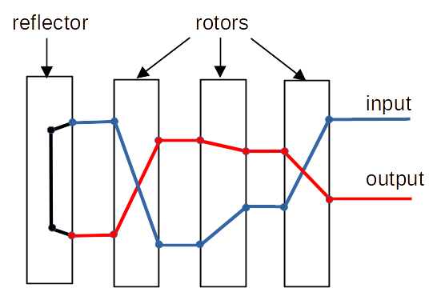
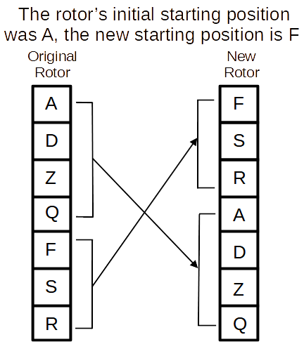
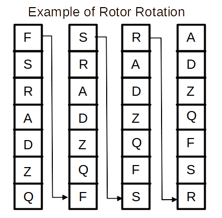

Before encrypting/decryption, an enigma machine operator must set the rotors to an initial starting position. (See the operation notes.)
The simulation has an interesting problem. The code must simulate how mechanical rotors and electric circuit works.
Note that the IN pins are not the OUT pins for rotors and reflector. Also note if you switch input and output, an encrypt character can be decrypted.

"In the code" keys/lamps/characters are hard coded ...
A python list is used to represent a round rotor. When processing reaches the end of the list it start back at the beginning. Thus the list effectively becomes round.
Python lists have an integer index to access elements (values) in the list. The first element's index is zero (0).
Each rotor's starting position must be set before encryption/decryption. (The default "in the code" is A.)
The diagram shows how the code simulates the rotor being rotated so F is in the starting position. The list order is maintained.

The diagram show characters in a rotor list. In fact, "in the code" it contains list-indexes. The characters are in the diagram to help visualize what is happening. The list is a randomized set of list-indexes (characters).
For example if when a key is pressed, the Key's (character's) list-index (0-25) is used to access the first rotor's list-index (0-25). The list's value at that index is used to access the next rotor, and so on until, at the end, a lamp is lit indicating the encrypted/decrypted character. At each step a new character (list-index) is substituted for the current character (list-index).
This diagram shows how the code simulates a rotor rotating to the next position to wait for the next key to be pressed. (After each move to the next position the character pins are connected to different set of rotor pins.)

Enigma machine rotors are hard-wired substitution ciphers. Each rotor's IN pin is connected to a different OUT pin. There is a unique IN/OUT pair of pins for each letter of the alphabet. Each letter of the alphabet is associated with a list-index and pin number. For example, the letter A may be pin 0 and list index 0. (See the abc dictionary in the code.)
With a rotor/list, you can think of the list-index as an IN pin/list-index/character. The list's value at the index is an OUT pin/list-index/character. OUT is also the IN pin/list-index/character of the next rotor.
At the start of encryption/decryption, a character is converted to a pin/index. list-indexes are used to traverse the rotors and the reflector and back. At the end, the resulting list-index is converted back to a character and a lamp is lit.
#!/usr/bin/python3 lst = [ 'a','b','c','d' ] # list lstlen = len(lst) # list length max = 2 # max number of time thru the loop i = 0 # list (rotor) element index while True: # ---- display loop information print(f'({max}) [{i}] {lst[i]}') # --- loop around the list (rotor) i += 1 if not i < lstlen: i = 0 max -= 1 # ---- make sure the test/demo loop ends if max < 0: break